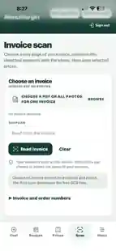
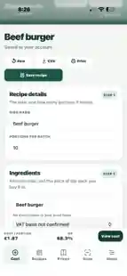
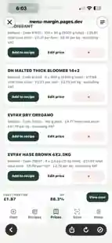

Recipe costing
Work out ingredient costs, batch costs and accurate cost per portion.
RECIPE COSTING & MENU PRICING FOR PROFESSIONAL KITCHENS
Recipe costing software built for chefs, caterers and independent restaurants.
Cost recipes, calculate GP, manage supplier prices and scan invoices — in one simple tool designed around real kitchen work.
14 days free · No card required. Then £9.99/month if you choose to subscribe. No automatic charge.



Real product screens · Recipe costing · Supplier prices · Invoice scanning
ALL YOUR COSTING TOOLS IN ONE PLACE
Less spreadsheet work. More control over what each dish really costs.
Work out ingredient costs, batch costs and accurate cost per portion.
Check gross profit and work backwards from your target GP.
Keep suppliers, pack sizes and buying prices in one place.
Read supplier invoices and review products before importing prices.
Save recipes to your account and retrieve them when needed.
Export CSVs, print recipes and download an account backup.
BUILT FOR REAL KITCHENS
Mise en Price is built around everyday kitchen tasks: costing a batch, checking your portion cost, keeping supplier prices up to date and reviewing invoices before importing them.
There are no invented testimonials or inflated savings figures here. Explore the actual app screens, then try the recipe calculator below before deciding whether to create an account.
Try the free recipe calculator →WHAT YOU CAN CHECK BEFORE SIGNING UP
Mise en Price calculates ingredient-based GP; it does not include labour, overheads or waste automatically.
Try it before you sign up
Use the calculator right here. No login, no card and no commitment.
Try the full Mise en Price app free for 14 days. No card required.
Start your free trial ↗From delivery to dish
Keep the buying price and the recipe costing in the same place.
Add supplier prices by hand, or scan a PDF or invoice photo. Check names, pack sizes and prices against the original, then import the rows you choose.
Add ingredients and quantities, set your portions and see the cost per plate. Enter a selling price to check GP, or work towards a target GP.
Link recipe ingredients to your supplier price book. When you confirm a price change, linked recipes use the updated price.
Built around kitchen work
Open Mise en Price on your phone, tablet or computer. Add it to your phone’s Home Screen for quick access.
Keep pack sizes, product codes and suppliers together. Review previous price changes when you need them.
Save your recipes to your account. Refresh and sync to pick up saved changes on another device.
Export CSVs, print a recipe or download an account backup. Keep a copy of your work whenever you need it.
Simple monthly pricing
Use the free trial with your own recipes and supplier prices. See how it fits your kitchen.
Already have an account?
Sign in with your existing details.
Mise en Price
£9.99 / month after your trial
No automatic charge at the end of your trial. Choose whether to subscribe for £9.99/month. Manage or cancel in the app.
Before you start
No. Open Mise en Price in your browser. On iPhone, use Safari’s Share menu and Add to Home Screen for quick access.
No scanner is perfect. Review names, pack sizes, quantities and prices against the original invoice before importing. You decide which rows go into your price book.
Yes. Sign in with your existing details. Your saved recipes and supplier prices stay with your account.
It compares ingredient cost with an excluding-VAT selling price. It does not include labour, overheads or waste, and it does not automatically deduct VAT from entered ingredient prices.
Invoice recognition runs on your device. Reviewed entries you import into your price book use your account’s cloud save and sync. See the privacy information for storage details.
Use Manage billing in the app. The checkout and billing portal show your subscription details and access period.